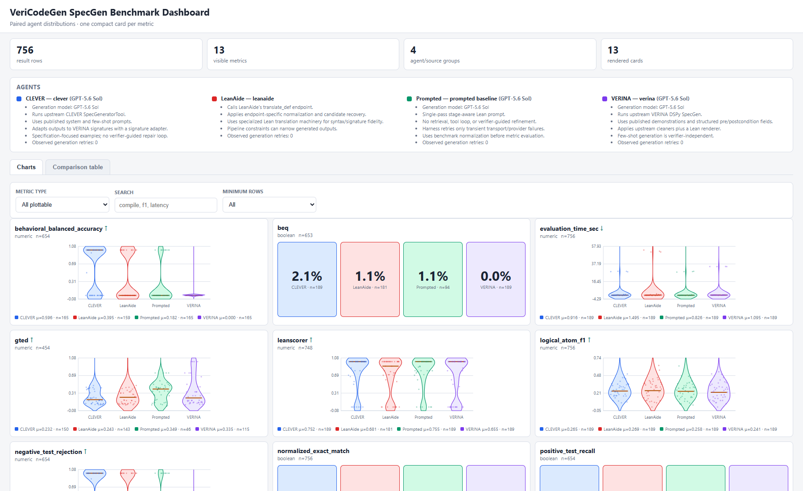
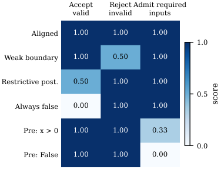

Evaluates LLM-generated Lean 4 specifications on VERINA and CLEVER tasks using Lean type-checking, LSP-based GTED similarity, and Lean-checked BEq+ equivalence proofs.
Abstract
When generating verifiable code, natural language requirements are mapped to machine checked code using LLMs and agentic workflows. A crucial component of this pipeline is specification generation (SpecGen), which produces a formal contract against which an agent can prove implementation correctness. Proof generation can obtain deterministic feedback from a theorem prover, but SpecGen lacks a definitive check that a generated specification captures the user's intent. A checked proof can therefore establish correctness against a specification that misrepresents the intended behaviour. We take a step towards holistic SpecGen evaluation with a unified dataset assembled from $350$ existing Lean tasks, including $189$ from VERINA and $161$ from CLEVER, and a framework covering formal validity, reference similarity and equivalence, and behavioural adequacy. We distinguish acceptance of required inputs from acceptance of valid outputs and rejection of invalid outputs, while making each metric's evidence scope explicit. Across four SpecGen configurations, restricting the generalized tree edit distance (GTED) comparison, a reference similarity measure, to $32$ jointly measurable VERINA tasks changes the VERINA configuration's position from second to fourth in mean similarity, showing the importance of measurement coverage. In an authored control, a specification achieves $100\%$ positive test recall and negative test rejection while accepting $0\%$ of required inputs. This demonstrates that perfect postcondition scores can miss an unusable input contract, motivating separate feedback on input coverage and output constraints.
Problem
In verifiable code generation, a checked proof only establishes correctness against a formal specification. Specification generation (SpecGen) has no definitive check that the generated specification captures user intent, so type-checking alone is an inadequate evaluation.
Approach
The authors assemble a unified dataset of 350 existing Lean SpecGen tasks: 189 from VERINA and 161 from CLEVER. They build an evaluation framework with four evaluator families: formal validity (Lean type-checking), reference similarity (exact match, logical-atom F1, GTED via Lean elaboration and LSP), reference equivalence (BEq+ bidirectional Lean-checked proofs), and behavioral adequacy (positive, negative, and required-input tests). Each metric records its scope, denominator, runtime, and evidence status, so unavailable evidence is not counted as metric failure.

Figure 6: Static dashboard generated by the benchmark suite for the 756 VERINA task–agent records. The interface exposes metric availability, per-agent distributions, summary values, and a comparison table.
Results
Across four GPT-based SpecGen configurations, restricting GTED to the 32 jointly measurable VERINA tasks moves the VERINA configuration from second to fourth in mean similarity. In an authored control, a specification achieves 100% positive recall and 100% negative rejection while accepting 0% of required inputs, showing that perfect postcondition scores can hide an unusable input contract.

Figure 7: Selected authored controls for the requirement to return an integer y>x . Positive recall and negative rejection each use six labeled pairs; required-input recall uses the inputs -1,0,1 . The last two rows preserve perfect postcondition scores while excluding required inputs. These controls illustrate distinct feedback dimensions, not the prevalence of model errors. This appendix gives a